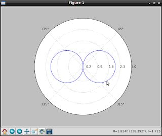
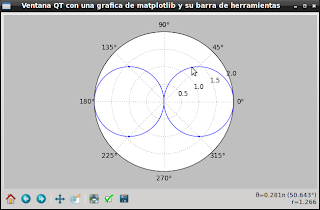

Generando una gráfica con PyQT y matplotlib (coordenadas polares). Parte 12
Posted on mié 08 junio 2011 in Tutorial Python • 3 min read
Continuando con los artículos sobre matplotlib y ahora usando PyQT, se explicará como crear gráficas con coordenadas polares.
La ecuación que se va a graficar es la siguiente:
r = 2 coseno(pit) siendo 0 <2
La gráfica se muestra en la siguiente figura:

El código para generar dicha gráfica es la siguiente:
```python
!/usr/bin/env python
Importar pyplot
import matplotlib.pyplot as plt
Importar numpy
import numpy as np
Se crea el rango de valores angulares
theta = np.arange(0., 2., 0.005)*np.pi
Se calcula el coseno del rango de valores angulares
r = 2*np.abs(np.cos(theta))
Se crea la grafica en coordenadas polares pasando
el angulo theta y los valores de r
plt.polar(theta, r)
Se crea una grilla de los angulos 45,90 y 369
plt.thetagrids(range(45, 360, 90)) plt.rgrids(np.arange(0.2, 3.1, .7), angle=0);
Se genera la grafica
plt.show() ```
A continuación se va a crear la gráfica de la misma ecuación utilizando pyQT.
La gráfica se muestra en la siguiente figura:

La figura muestra la ventana ahora con un título, la barra inferior de herramienta de navegación.
El código para generar la gráfica:
```python
!/usr/bin/env python
Importar numpy
import numpy as np
Importar el objeto Figure de matplotlib
from matplotlib.figure import Figure
Importar el Objeto FigureCanvas de Qt4Qgg,
Se heredara desde QWidget.
from matplotlib.backends.backend_qt4agg \ import FigureCanvasQTAgg as FigureCanvas
Importar el widget de la barra de navegacion
import the NavigationToolbar Qt4Agg widget
from matplotlib.backends.backend_qt4agg \ import NavigationToolbar2QTAgg as NavigationToolbar
Importar QTGui de PyQt4.
from PyQt4 import QtGui
Se crea la Clase Qt4MplCanvas heredando FigureCanvas
class Lienzo(FigureCanvas):
def __init__(self, parent):
# Se instancia el objeto figure
self.fig = Figure()
#Se define la grafica en coordenadas polares
self.axes = self.fig.add_subplot(111,polar=True)
#Se crea el rango de valores angulares
theta = np.arange(0., 2., 0.005)*np.pi
#Se calcula el coseno del rango de valores angulares
r = 2*np.abs(np.cos(theta))
#Se genera la grafica pasando theta y r.
self.axes.plot(theta, r)
# se inicializa FigureCanvas
FigureCanvas.__init__(self, self.fig)
# se define el widget padre
self.setParent(parent)
# se define el widget como expandible
FigureCanvas.setSizePolicy(self,
QtGui.QSizePolicy.Expanding,
QtGui.QSizePolicy.Expanding)
# se notifica al sistema de la actualizacion de la politica
FigureCanvas.updateGeometry(self)
Se crea la clase Ventana que hereda QMainWindow
class Ventana(QtGui.QMainWindow):
def __init__(self):
#Inicializacion del widget QMainWindow
QtGui.QMainWindow.__init__(self)
# se define el titulo de la ventana
self.setWindowTitle("Ventana PyQT con una grafica de matplotlib")
# instantiate a widget, it will be the main one
# Se instancia el widget.
self.main_widget = QtGui.QWidget(self)
#Se crea una layout vbox
vbl = QtGui.QVBoxLayout(self.main_widget)
#Se instancia el Lienzo con la grafica de Matplotlib
qmc = Lienzo(self.main_widget)
# se instancia la barra de navegacion
ntb = NavigationToolbar(qmc, self.main_widget)
# se empaqueta el lienzo y la barra de navegacion en el vbox
vbl.addWidget(qmc)
vbl.addWidget(ntb)
# se le asigna foco a la ventana
self.main_widget.setFocus()
#Se define el widget central
self.setCentralWidget(self.main_widget)
if name == 'main': #Importar sys import sys #Importar QtGui de PyQt4 from PyQt4 import QtGui #Se crea la aplicacion grafica qApp = QtGui.QApplication(sys.argv) # se instancia la ventana aw = Ventana() # se muestra el widget aw.show() #Se inicia el lazo principal de QT sys.exit(qApp.exec_()) ```
===
¡Haz tu donativo! Si te gustó el artículo puedes realizar un donativo con Bitcoin (BTC) usando la billetera digital de tu preferencia a la siguiente dirección: 17MtNybhdkA9GV3UNS6BTwPcuhjXoPrSzV
O Escaneando el código QR desde billetera: